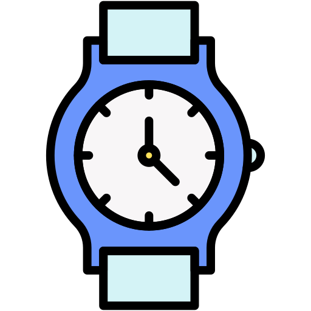

Pero... ¿Consume Mucho Tiempo una ETE?
Interesante pregunta, con una respuesta no muy sencilla
Eso es tu desición, la cual debe considerar tu modo de organización personal
(Para algunos consejos de gestión de tiempo da click aquí)
Duración

En el primer año cursando tu ETE tu tiempo será de
2 Horas diarias
para acreditarla

En el último año de esta solamente nesecitarás tomar la
clase de 1 Hora diaria,
además realizar un servicio social o práctica profesional (estas últimas tienen un plazo de hasta 2 años después de haber salido de la ETE para realizarse)

(Para más información sobre el Servicio Social da click aquí)

Pero no lo veas como algo malo, velo como la oportunidad
de adquirir conocimiento
Será útil en tu formación
Además, siempre puedes crear tu propio juego con lo aprendido :)